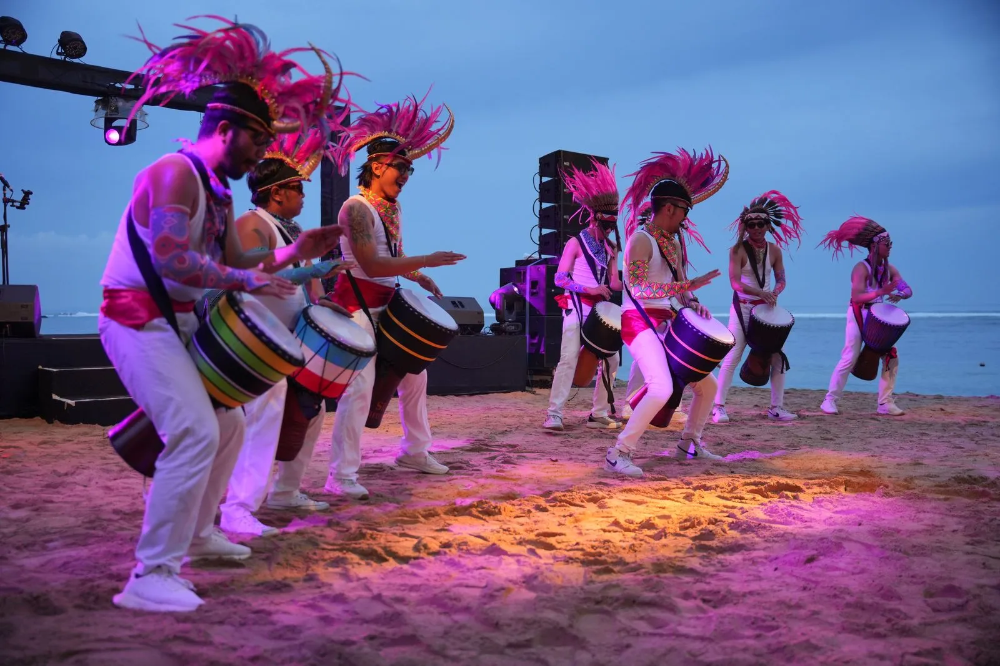
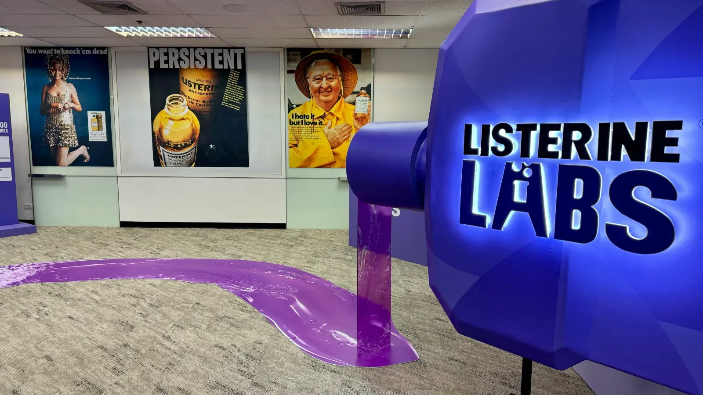

A different
way in.
Events are our starting point.
Moving people is the point.
We connect insight, ideas and regional delivery to make people feel, understand and do something different.

THE PLACE ISPART OF THE IDEA.
Different energy.Explore the story ↗
What needs
to move?
Give people a reason to look closer. Then a reason to act.
An immersive experience that put oral-health education into people’s hands.

Different briefs.
Real movement.
Explore our work ↗Give people a reason to be there.
Big launches. Focused conversations. Moments that feel different because the audience comes first.
Make the science something people can step into.
An immersive experience that put oral-health education into people’s hands.
Immersive experienceBuild connections that outlast the conference.
A regional forum where the destination became part of the experience.
Conference + hospitalityA shared purpose. A different horizon.
A Fiji partner summit connected the business agenda with the life of the destination.
Conference + hospitality
Make room for the business conversation.
A Sydney customer event brought Dell and Microsoft presentations into a shared meeting environment.
B2B engagementBrowse all 15 case studies and archive stories
- Listerine · ThailandMake the science something people can step into.
- Canalys · IndonesiaBuild connections that outlast the conference.
- Dell Technologies · RegionalFrom interest in AI to a practical next step.
- VMware · JapanTake the cloud story to the streets.
- Dell EMC · FijiA shared purpose. A different horizon.
- Dell Technologies · AustraliaMake room for the business conversation.
- Intent.asia · Southeast AsiaA better decision starts with your circumstances.
- Veeam · APJA serious proposition. A different volume.
- NetApp · Asia PacificDifferent offices. The same conversation.
- IDEMIA · SingaporeMake the future visible.
- IMAS · SingaporeOne summit. Both sides of the screen.
- Alibaba Cloud · SingaporeFrom AI possibility to personal experience.
- Workday · APJThe audience moved online. The idea moved with them.
- NOW / Vue · Digital archiveKeep the team in the picture.
- Red Hat · MalaysiaMake a complex conversation visible.
One intent.
Local intelligence.
Across ASEAN, North Asia, Australia and the Pacific. The ambition travels. The experience belongs.
From a focused room
to a regional ambition.
Explore the projects, films and archive stories behind our reach. Different markets. One connected way of thinking.
Motivation
over Medium.
The best format starts with a better question.
What do you need people to feel, understand or do? That’s where we begin. Then we connect the right ideas, channels and local expertise.
Find the reason to care.
Start with the people, not the platform. Understand the audience, the business context and the question behind the brief.
- Audience insight
- Strategy development
- Audience acquisition
Bring us the brief
you haven’t
solved yet.
↗You don’t need a finished brief. Tell us who needs to move,
where it needs to happen and what is making it difficult.